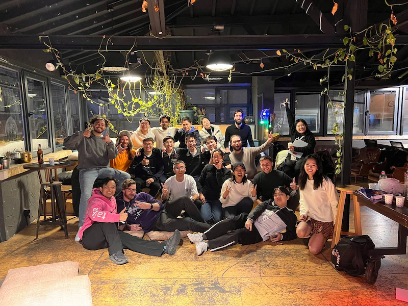

如何做好社区？在伊斯坦布尔 Devconnect 期间的思考¶

做社区的过程也是我探索这个世界的过程，通过这些探索，有机会了解世界更多的真相，看到更多的可能性，从 2023 年 10 月 22 日开始的这一个月 hacker house 在伊斯坦布尔的经历正是这些探索的完美体现。这些经历激发我的思考，让我形成新的经验，这些经验继续推动我探索新的可能性。
这次我们 hacker house(Antalpha HackerHouse) 的主题是 Research & Build，每个人需要在两周的时间内选择 1-2 个 ZKP 相关的 paper 阅读，然后给大家分享，之后的第三周和第四周是 build 阶段，大家一起去参加黑客松和打 CTF，我们鼓励 hacker 利用所读 paper 的知识去 build。从我个人来看，这次的 hacker house 很成功，在 house 中有非常多的深入讨论，也有很多协作，最后也获得了很多黑客松奖项。
找到自己的定位，如果不知道，持续探索和寻找¶
我们自己的定位是开发者社区，我们更关注技术方面的内容，所以我们做 hacker house 招募的也是开发者。这次我用同样的内容在我们的 hacker house 以及 zuconnect(zuzalu) 分别进行了分享，发现在我们 house 效果更好，大家对内容更感兴趣，有更多的讨论，而在 zuconnect，反而没有很好的讨论，我感觉是因为 zuconnect 很大一部分人不是开发者，所以对 ZKP 里面的一些技术细节不是太感兴趣，大多更专注应用层面的创新。
我听到一些朋友说我们做的事情比较硬核，这也让我看到了我们自己做的事情的差异化的价值，只要专注做自己擅长的事情，就会走出独一无二的路。我们这次土耳其的 hacker house 就是一个例证，前期招募，有一半的申请人是通过朋友介绍过来的，在 Devconnect 现场，也碰到一些陌生的朋友，说看到我们的活动做的不错。
好的大会可以聚集优秀的人才¶

这是我们积累的一个重要经验，最开始我们什么海外的资源都没有，依靠大会的流量获得了关注，为我们的 hacker house 吸引到了非常优秀的人，这些人也帮我们带来更多优秀的人，这是一个正向循环，也是让我们持续进步的重要因素。
大会期间太卷，让我们前置活动吧¶
大会期间办活动的问题是，因为各种活动和交流比较多，大家很难完全专注于我们的 hacker house。
这次我们调整了一下，时间总共四周，在 Devconnect 开始前三周就开始我们的 hacker house，最后一周和 Devconnect 大会重合，事实证明这个安排是正确的，前三周大家基本都非常专注于我们的 house，讨论和学习氛围非常好，最后一周主要举办活动、参加大会、打黑客松、和其他伙伴交流，整个四周安排非常饱满。
大会期间也是给我们自己积累声誉的机会，和其他朋友交流的时候会提到我们前三周取得的成果，这种口口相传其实很有效。
白板效果非常好¶

我们这次鼓励所有人都通过白板来分享，这样的好处是，分享人很难跳过某个细节，因为写下来的东西都要解释给别人听，另外因为需要写出来和讲出来，所以需要对所讲述的内容比较熟悉才行，这样就要求分享人要准备充分才行。还有一点，就是写白板比较慢，这样就给了听的人比较多的思考时间，容易跟上分享人的思路，最终达到比较好的分享效果。
耐心很重要¶
社区是关于人的集合，构建信任非常重要，但信任的构建过程比较慢，沿着正确的方向可能需要半年到一年的时间才能逐渐获得行业认可，很多人做社区没有耐心或者不知道前期的积累是缓慢的，过早追求一些社区数据，比如人数等，这种 kpi 容易毁掉社区，因为初始的信任难以量化。保持耐心，最终会获得行业的认可。
这一点不但对于技术社区是这样的，对于一个项目的社区来讲，也是一样的，令我印象深刻的是 EZKL 和 ZK Email 这两个项目，他们从最开始人很少的时候就非常认真的在维护自己的社区，在 telegram 群里认真回答每一个问题，协助解决开发者遇到的问题，快速的迭代产品。这些小的正面的互动是形成好的社区的关键。
社区不能被控制，只能被引导，引导的最好方式是自己下场干¶

在社区中人的关系比较平等，你很难要求社区的其他人去做你想做而对方不想做的事，人家不爽就离开了，就连 Linux 的创始人 Linus Torvalds 也说，在社区中你只能在他们想做的方向上引导。我觉得最好的引导方式就是参与到具体的事务中，推动事情向自己想要的方向发展，比如这次，我也跟着大家读 paper 和做分享，我个人的收获也很大，同时也再次验证了我们这种组织方式的有效性，也给后续要做的事情提供了很好的思路和经验。
难的事可以吸引优秀的人¶
这次的要求是需要每个人读一篇 ZKP 方面的 paper，然后每周向大家分享，这个事情对于开发者来说是难以想象的，大家都认为读不懂，但这次下来，大家都完成的非常不错，整体的成就感非常强，还说希望后面的 hacker house 继续多读 paper。之所以能完成的不错，我觉得也是因为这件难的事情吸引了优秀的人，本身就已经成功了一半。
线下活动很重要，人与人互相激发¶
人最关注的还是人。线下活动有机会让来自不同地域的人进行交流，容易激发个体进步的动力。比如我们几个英语口语没那么流利的人，因为希望和大家交流，所以有很大的动力提升自己的英文口语，这次也确实提升了很多。
 线下活动很容易创造信任。这一点在网络上很难做到，因为信任很大程度上取决于情感上的连接和良好的互动，这种信任的建立通过线下的交流更容易达成。
线下活动很容易创造信任。这一点在网络上很难做到，因为信任很大程度上取决于情感上的连接和良好的互动，这种信任的建立通过线下的交流更容易达成。
最后¶
我们在海外的探索，从 2023 年 2 月开始，经过 9 个月，完成了从零到一的阶段，积累了一定的声誉，为我们后面的发展奠定了较好的基础。我个人也从这个过程中认识了认识了很多人，看到了人与人之间良好互动的重要性和乐趣。我还会继续探索，揭示世界更多的真相，创造更多的可能性。